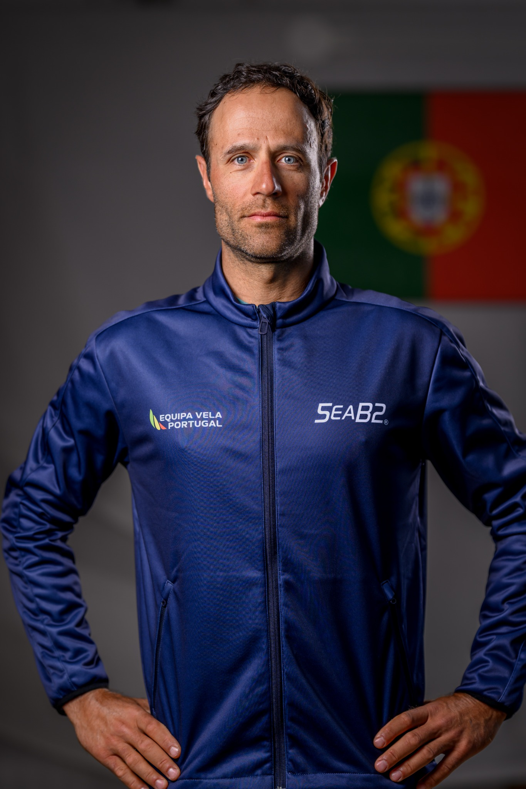
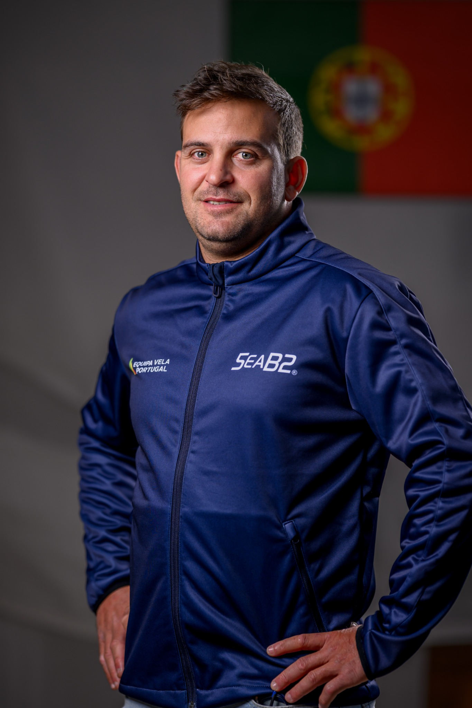
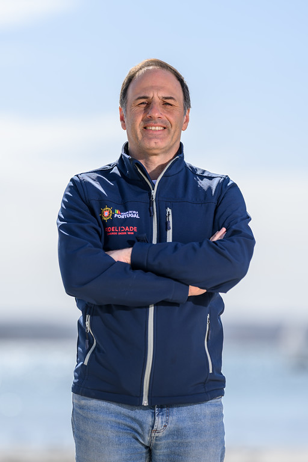
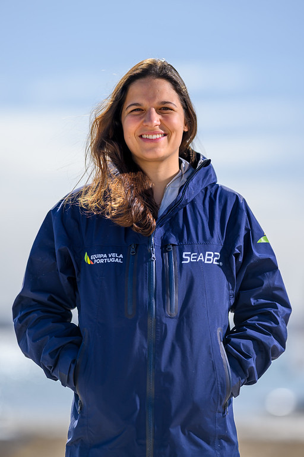
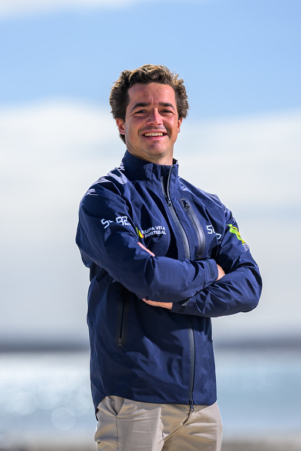

49er FX
A equipa técnica e a direção que acompanham a Equipa Olímpica e o Alto Rendimento da vela portuguesa.
Treinadores e elementos de acompanhamento técnico ao serviço das diferentes classes e programas de Alto Rendimento.



Responsáveis pelo acompanhamento institucional e estratégico do Alto Rendimento da Federação Portuguesa de Vela.



